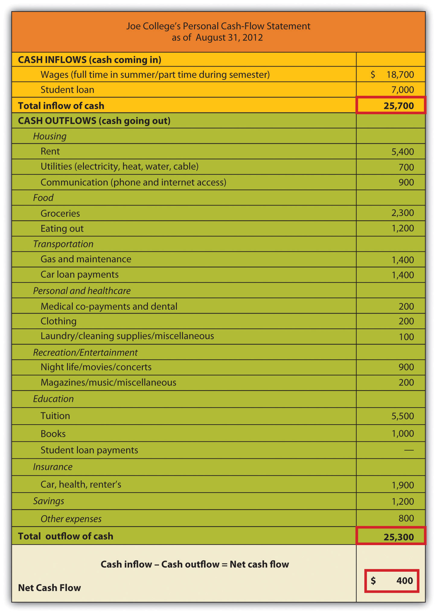
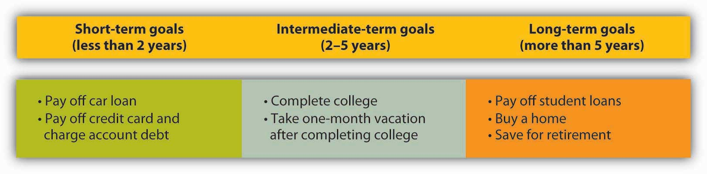
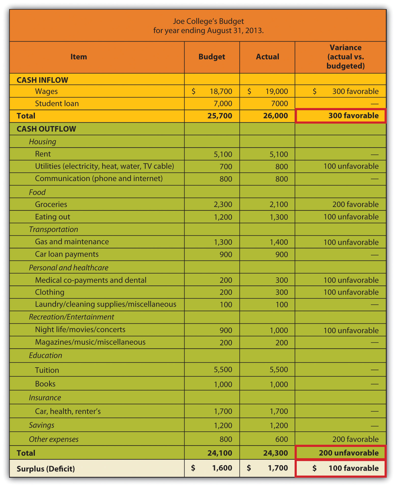
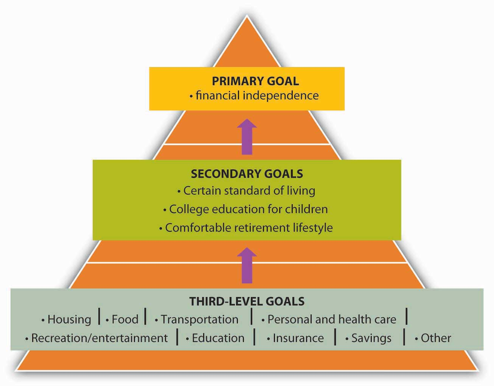

We’ve divided the financial planning process into three steps:
Just how are you doing, financially speaking? You should ask yourself this question every now and then, and it should certainly be your starting point when you decide to initiate a more or less formal financial plan. The first step in addressing this question is collecting and analyzing the records of what you own and what you owe and then applying a few accounting terms to the results:
Your net worthThe difference between an individual’s assets and liabilities. (accounting term for your wealth) is the difference between your assets and your liabilities. Thus the formula for determining net worth is:
Assets − Liabilities = Net worthIf you own more than you owe, your net worth will be positive; if you owe more than you own, it will be negative. To find out whether your net worth is on the plus or minus side, you can prepare a personal net worth statementA personal balance sheet that lists the value of the things you own, the amounts owed to others, and the difference, called “net worth.” like the one in Figure 14.6 "Net Worth Statement", which we’ve drawn up for a fictional student named Joe College. (Note that we’ve included lines for items that may be relevant to some people’s net worth statements but left them blank when they don’t apply to Joe.)
Figure 14.6 Net Worth Statement

Joe has two types of assets:
Note that we’ve been careful to calculate Joe’s assets in terms of their fair market valueThe price you could get by selling assets at their present price.—the price he could get by selling them at present, not the price he paid for them or the price that he could get at some future time.
Joe’s net worth statement also divides his liabilities into two categories:
Finally, note that Joe has positive net worth. At this point in the life of the average college student, positive net worth may be a little unusual. If you happen to have negative net worth right now, you’re technically insolvent, but remember that a major goal of getting a college degree is to enter the workforce with the best possible opportunity for generating enough wealth to reverse that situation.
Now that you know something about your financial status on a given date, you need to know more about it over a period of time. This is the function of a cash-flow or income statementShows where your money has come from and where it’s slated to go., which shows where your money has come from and where it’s slated to go.
Figure 14.7 "Cash-Flow Statement" is Joe College’s cash-flow statement. As you can see, Joe’s income (his cash inflows—money coming in) is derived from two sources: student loans and income from a part-time job. His expenditures (cash outflows—money going out) fall into several categories: housing, food, transportation, personal and health care, recreation/entertainment, education, insurance, savings, and other expenses. To find out Joe’s net cash flow, we subtract his expenditures from his income:
Figure 14.7 Cash-Flow Statement
Joe has been able to maintain a positive cash flow for the year ending August 31, 2012, but he’s cutting it close. Moreover, he’s in the black only because of the inflow from student loans—income that, as you’ll recall from his net worth statement, is also a noncurrent liability. We are, however, willing to give Joe the benefit of the doubt: Though he’s incurring the high costs of an education, he’s willing to commit himself to the debt (and, we’ll assume, to careful spending) because he regards education as an investment that will pay off in the future.
Remember that when constructing a cash-flow statement, you must record only income and expenditures that pertain to a given period, whether it be a month, a semester, or (as in Joe’s case) a year. Remember, too, that you must figure both inflows and outflows on a cash basis: you record income only when you receive money, and you record expenditures only when you pay out money. When, for example, Joe used his credit card to purchase his computer, he didn’t actually pay out any money. Each monthly payment on his credit card balance, however, is an outflow that must be recorded on his cash-flow statement (according to the type of expense—say, recreation/entertainment, food, transportation, and so on).
Your cash-flow statement, then, provides another perspective on your solvency: if you’re insolvent, it’s because you’re spending more than you’re earning. Ultimately, your net worth and cash-flow statements are most valuable when you use them together. While your net worth statement lets you know what you’re worth—how much wealth you have—your cash-flow statement lets you know precisely what effect your spending and saving habits are having on your wealth.
We know from Joe’s cash-flow statement that, despite his limited income, he feels that he can save $1,200 a year. He knows, of course, that it makes sense to have some cash in reserve in case of emergencies (car repairs, medical needs, and so forth), but he also knows that by putting away some of his money (probably each week), he’s developing a habit that he’ll need if he hopes to reach his long-term financial goals.
Just what are Joe’s goals? We’ve summarized them in Figure 14.8 "Joe’s Goals", where, as you can see, we’ve divided them into three time frames: short-term (less than two years), intermediate-term (two to five years), and long-term (more than five years). Though Joe is still in an early stage of his financial life cycle, he has identified and structured his goals fairly effectively. In particular, they satisfy four criteria of well-conceived goals: they’re realistic and measurable, and Joe has designated both definite time frames and specific courses of action.Jack R. Kapoor, Les R. Dlabay, and Robert J. Hughes, Personal Finance, 8th ed. (New York: McGraw-Hill, 2007), 81.
Figure 14.8 Joe’s Goals
They’re also sensible. Joe sees no reason, for example, why he can’t pay off his car loan, credit card, and charge account balances within two years. Remember that, with no income other than student-loan money and wages from a part-time job, Joe has decided (rightly or wrongly) to use his credit cards to pay for much of his personal consumption (furniture, electronics equipment, and so forth). It won’t be an easy task to pay down these balances, so we’ll give him some credit (so to speak) for regarding them as important enough to include paying them among his short-term goals. After finishing college, he’ll splurge and take a month-long vacation. This might not be the best thing to do from a financial point of view, but he knows this could be his only opportunity to travel extensively. He is realistic in his classification of student loan repayment and the purchase of a home as long-term. But he might want to revisit his decision to classify saving for his retirement as a long-term goal. This is something we believe he should begin as soon as he starts working full-time.
Once he has reviewed his cash-flow statement, Joe has a much better idea of what cash flowed in for the year that ended August 31, 2012, and a much better idea of where it went when it flowed out. Now he can ask himself whether he’s satisfied with his annual inflow (income) and outflow (expenditures). If he’s anything like most people, he’ll want to make some changes—perhaps to increase his income, to cut back on his expenditures, or, if possible, both. The first step in making these changes is drawing up a personal budgetA document that itemizes the sources of income and expenditures for a future period (often a year).—a document that itemizes the sources of his income and expenditures for the coming year, along with the relevant money amounts for each.
Having reviewed the figures on his cash-flow statement, Joe did in fact make a few decisions:
Revising his figures accordingly, Joe developed the budget in Figure 14.9 "Joe’s Budget" for the year ending August 31, 2013. Look first at the column headed “Budget.” If things go as planned, Joe expects a cash surplus of $1,600 by the end of the year—enough to pay off his credit card debt and leave him with an extra $400.
Figure 14.9 Joe’s Budget
Now we can examine the two remaining columns in Joe’s budget. Throughout the year, Joe will keep track of his actual income and actual expenditures and will enter the totals in the column labeled “Actual.” Like most reasonable people, however, Joe doesn’t really expect his actual figures to match with his budgeted figures. So whenever there’s a difference between an amount in his “Budget” column and the corresponding amount in his “Actual” column, Joe records the difference, whether plus or minus, as a varianceDifference between the actual amount and the budgeted amount.. Two types of variances appear in Joe’s budget:
Before we leave the subject of the financial-planning process, let’s revisit the topic of Joe’s goals. Another look at Figure 14.8 "Joe’s Goals" reminds us that, at the current stage of his financial life cycle, Joe has set fairly simple goals. We know, for example, that Joe wants to buy a home, but when does he want to take this major financial step? And of course, Joe wants to retire, but what kind of lifestyle does he want in retirement? Does he expect, like most people, a retirement lifestyle that’s more or less comparable to that of his peak earning years? Will he be able to afford both the cost of a comfortable retirement and, say, the cost of sending his children to college? As Joe and his financial circumstances mature, he’ll have to express these goals (and a few others) in more specific terms.
Let’s fast-forward a decade or so, when Joe’s picture of stages 2 and 3 of his financial life cycle have come into clearer focus. If he hasn’t done so already, Joe is now ready to identify a primary goal to guide him in identifying and meeting all his other goals.See Bernard J. Winger and Ralph R. Frasca, Personal Finance: An Integrated Planning Approach, 6th ed. (Upper Saddle River, NJ: Prentice Hall, 2003), 57–58. Suppose that because Joe’s investment in a college education has paid off the way he’d planned ten years ago, he’s in a position to target a primary goal of financial independence—by which he means a certain financially secure life not only for himself but for his children, as well. Now that he’s set this primary goal, he can identify a more specific set of goals—say, the following:
Having set this secondary level of goals, Joe’s now ready to make specific plans for reaching them. As we’ve already seen, Joe understands that plans are far more likely to work out when they’re focused on specific goals. His next step, therefore, is to determine the goals on which he should focus this next level of plans.
As it turns out, Joe already knows what these goals are, because he’s been setting the appropriate goals every year since he drew up the cash-flow statement in Figure 14.7 "Cash-Flow Statement". In drawing up that statement, Joe was careful to create several line items to identify his various expenditures: housing, food, transportation, personal and health care, recreation/entertainment, education, insurance, savings, and other expenses. When we introduced these items, we pointed out that each one represents a cash outflow—something for which Joe expected to pay. They are, in other words, things that Joe intends to buy or, in the language of economics, consume. As such, we can characterize them as consumption goals. These “purchases”—what Joe wants in such areas as housing, insurance coverage, recreation/entertainment, and so forth—make specific his secondary goals and are therefore his third-level goals.
Figure 14.10 "Three-Level Goals/Plans" gives us a full picture of Joe’s three-level hierarchy of goals.
Figure 14.10 Three-Level Goals/Plans
A closer look at the list of Joe’s consumption goals reveals that they fall into two categories:
Joe’s desire to meet this second category of consumption goals—future goals such as education for his kids and a comfortable retirement for himself and his wife—accounts for the appearance on his list of the one item that, at first glance, may seem misclassified among all the others: namely, savings.
It’s tempting to glance at Joe’s budget and cash-flow statement and assume that he shares with most of us a common attitude toward saving money: when you’re done allotting money for various spending needs, you can decide what to do with what’s left over—save it or spend it. In reality, however, Joe’s budgeting reflects an entirely different approach. When he made up the budget in Figure 14.9 "Joe’s Budget", Joe started out with the decision to save $1,600—or at least to avoid spending it. Why? Because he had a goal: to be free of credit card debt. To meet this goal, he planned to use $1,200 of his current income to pay off what would continue to hang over his head as a future expense (his credit card debt). In addition, he planned to have $400 left over after he’d paid his credit card balance. Why? Because he had still longer-term goals, and he intended to get started on them early—as soon as he finished college. Thus his intention from the outset was to put $400 into savings.
In other words, here’s how Joe went about budgeting his money for the year ending August 31, 2013 (as shown in Figure 14.9 "Joe’s Budget"):
If you’re concerned that Joe’s sense of delayed gratification is considerably more mature than your own, think of it this way: Joe has chosen to pay himself first. It’s one of the key principles of personal-finances planning and an important strategy in doing something that we recommended earlier in this chapter—starting early.See Arthur J. Keown, Personal Finance: Turning Money into Wealth, 4th ed. (Upper Saddle River, NJ: Pearson Education, 2007, 22 et passim.
The financial planning process consists of three steps:
In step 1 of the financial planning process, you determine what you own and what you owe:
Most people have two types of assets:
Likewise, most people have two types of liabilities:
In addition to the itemized lists of inflows and outflows, there are three other columns in the budget:
There are two types of variance:
(AACSB) Analysis
Using your own information (or made-up information if you prefer), go through the three steps in the financial planning process: